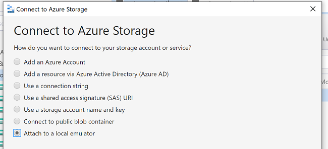
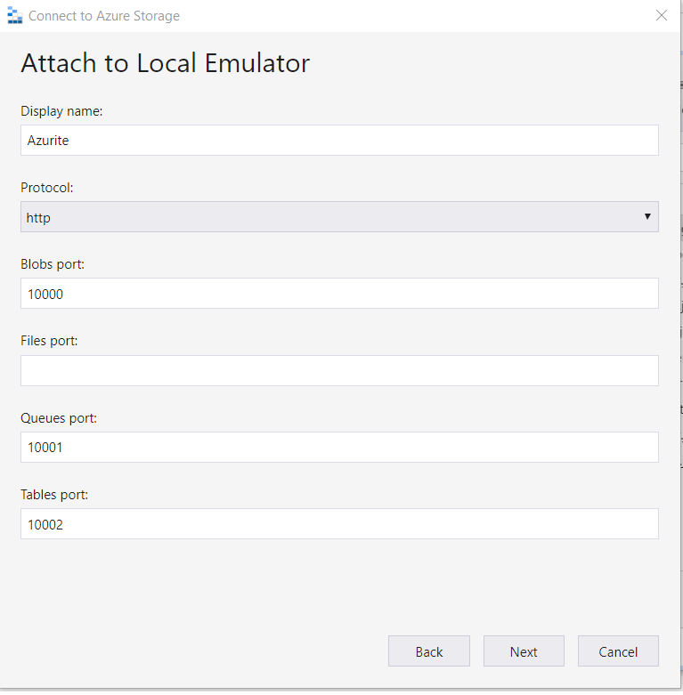
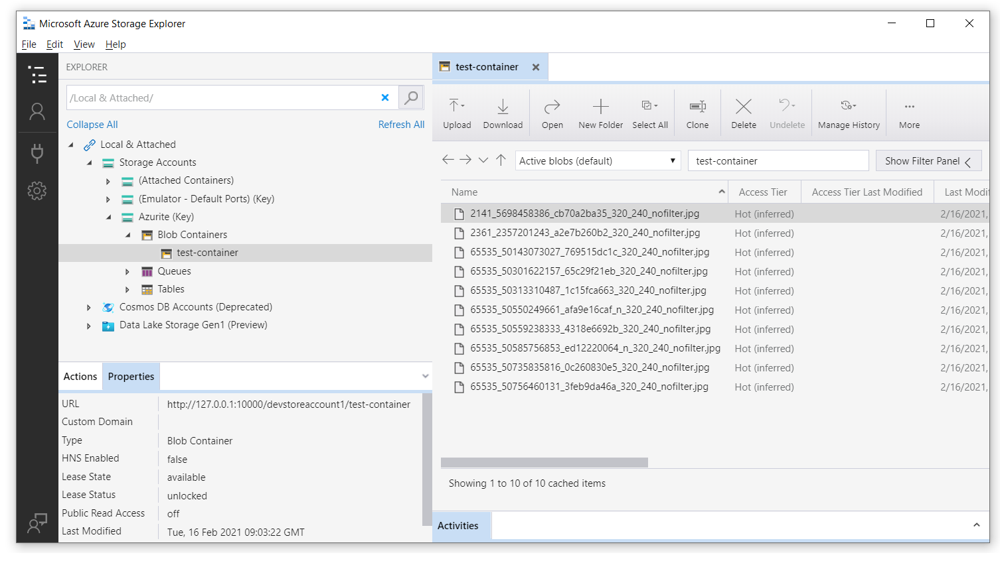
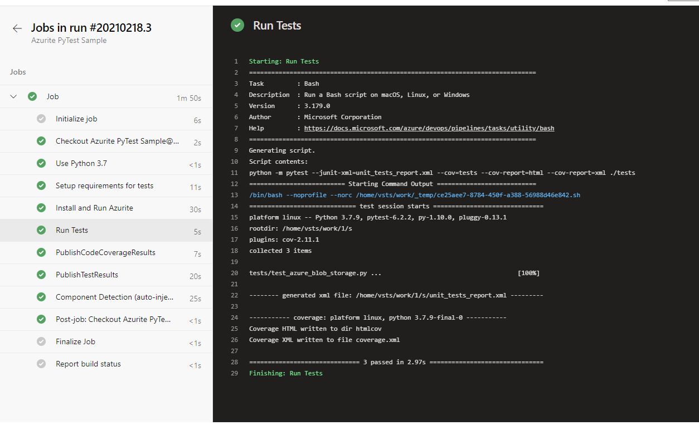

Using Azurite to Run Blob Storage Tests in a Pipeline
This document determines the approach for writing automated tests with a short feedback loop (i.e. unit tests) against security considerations (private endpoints) for the Azure Blob Storage functionality.
Once private endpoints are enabled for the Azure Storage accounts, the current tests will fail when executed locally or as part of a pipeline because this connection will be blocked.
Utilize an Azure Storage Emulator - Azurite
To emulate a local Azure Blob Storage, we can use Azure Storage Emulator. The Storage Emulator currently runs only on Windows. If you need a Storage Emulator for Linux, one option is the community maintained, open-source Storage Emulator Azurite.
The Azure Storage Emulator is no longer being actively developed. Azurite is the Storage Emulator platform going forward. Azurite supersedes the Azure Storage Emulator. Azurite will continue to be updated to support the latest versions of Azure Storage APIs. For more information, see Use the Azurite emulator for local Azure Storage development.
Some differences in functionality exist between the Storage Emulator and Azure storage services. For more information about these differences, see the Differences between the Storage Emulator and Azure Storage.
There are several ways to install and run Azurite on your local system as listed here. In this document we will cover Install and run Azurite using NPM and Install and run the Azurite Docker image.
1. Install and Run Azurite
a. Using NPM
In order to run Azurite V3 you need Node.js >= 8.0 installed on your system. Azurite works cross-platform on Windows, Linux, and OS X.
After the Node.js installation, you can install Azurite simply with npm which is the Node.js package management tool included with every Node.js installation.
# Install Azurite
npm install -g azurite
# Create azurite directory
mkdir c:/azurite
# Launch Azurite for Windows
azurite --silent --location c:\azurite --debug c:\azurite\debug.log
If you want to avoid any disk persistence and destroy the test data when the Azurite process terminates, you can pass the --inMemoryPersistence option, as of Azurite 3.28.0.
The output will be:
Azurite Blob service is starting at http://127.0.0.1:10000
Azurite Blob service is successfully listening at http://127.0.0.1:10000
Azurite Queue service is starting at http://127.0.0.1:10001
Azurite Queue service is successfully listening at http://127.0.0.1:10001
b. Using a Docker Image
Another way to run Azurite is using docker, using default HTTP endpoint
docker run -p 10000:10000 mcr.microsoft.com/azure-storage/azurite azurite-blob --blobHost 0.0.0.0
Docker Compose is another option and can run the same docker image using the docker-compose.yml file below.
version: '3.4'
services:
azurite:
image: mcr.microsoft.com/azure-storage/azurite
hostname: azurite
volumes:
- ./cert/azurite:/data
command: "azurite-blob --blobHost 0.0.0.0 -l /data --cert /data/127.0.0.1.pem --key /data/127.0.0.1-key.pem --oauth basic"
ports:
- "10000:10000"
- "10001:10001"
2. Run Tests on Your Local Machine
Python 3.8.7 is used for this, but it should be fine on other 3.x versions as well.
-
Install and run Azurite for local tests:
Option 1: using npm:
# Install Azurite npm install -g azurite # Create azurite directory mkdir c:/azurite # Launch Azurite for Windows azurite --silent --location c:\azurite --debug c:\azurite\debug.logOption 2: using docker
docker run -p 10000:10000 mcr.microsoft.com/azure-storage/azurite azurite-blob --blobHost 0.0.0.0 -
In Azure Storage Explorer, select
Attach to a local emulator
-
Provide a Display name and port number, then your connection will be ready, and you can use Storage Explorer to manage your local blob storage.

To test and see how these endpoints are running you can attach your local blob storage to the Azure Storage Explorer.
-
Create a virtual python environment
python -m venv .venv -
Container name and initialize env variables: Use conftest.py for test integration.
from azure.storage.blob import BlobServiceClient import os def pytest_generate_tests(metafunc): os.environ['STORAGE_CONNECTION_STRING'] = 'DefaultEndpointsProtocol=http;AccountName=devstoreaccount1;AccountKey=Eby8vdM02xNOcqFlqUwJPLlmEtlCDXJ1OUzFT50uSRZ6IFsuFq2UVErCz4I6tq/K1SZFPTOtr/KBHBeksoGMGw==;BlobEndpoint=http://127.0.0.1:10000/devstoreaccount1;' os.environ['STORAGE_CONTAINER'] = 'test-container' # Crete container for Azurite for the first run blob_service_client = BlobServiceClient.from_connection_string(os.environ.get("STORAGE_CONNECTION_STRING")) try: blob_service_client.create_container(os.environ.get("STORAGE_CONTAINER")) except Exception as e: print(e)*Note: value for
STORAGE_CONNECTION_STRINGis default value for Azurite, it's not a private key -
Install the dependencies
pip install -r requirements_tests.txt -
Run tests:
python -m pytest ./tests
After running tests, you can see the files in your local blob storage

3. Run Tests on Azure Pipelines
After running tests locally we need to make sure these tests pass on Azure Pipelines too. We have 2 options here, we can use docker image as hosted agent on Azure or install an npm package in the Pipeline steps.
trigger:
- master
steps:
- task: UsePythonVersion@0
displayName: 'Use Python 3.7'
inputs:
versionSpec: 3.7
- bash: |
pip install -r requirements_tests.txt
displayName: 'Setup requirements for tests'
- bash: |
sudo npm install -g azurite
sudo mkdir azurite
sudo azurite --silent --location azurite --debug azurite\debug.log &
displayName: 'Install and Run Azurite'
- bash: |
python -m pytest --junit-xml=unit_tests_report.xml --cov=tests --cov-report=html --cov-report=xml ./tests
displayName: 'Run Tests'
- task: PublishCodeCoverageResults@1
inputs:
codeCoverageTool: Cobertura
summaryFileLocation: '$(System.DefaultWorkingDirectory)/**/coverage.xml'
reportDirectory: '$(System.DefaultWorkingDirectory)/**/htmlcov'
- task: PublishTestResults@2
inputs:
testResultsFormat: 'JUnit'
testResultsFiles: '**/*_tests_report.xml'
failTaskOnFailedTests: true
Once we set up our pipeline in Azure Pipelines, result will be like below
